All reports
Astra, Opus and the revolved mesher
Four revolved profiles: a multi-step shaft, a rounded filleted body and two hollow profiles with inner and outer features. Explicitly synthetic demonstration CAD.
Download PDF report
Multi-step shaft with chamfered tip
revshow_multistep_chamfer
Original CAD · half-meridian profile (axial →, radial ↑)Original CAD · isometric
GPT 6 Astra
geometry pass
17 seed parts · 4500 nominal hexes
Min SJ 0.6964 / doubled 0.7006
1 full checks · 2.28 min
$1.02 · Standard API equivalent
Author-planned meridian partition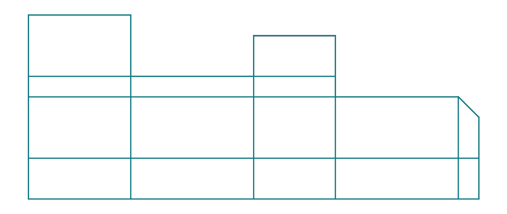
Realized source-part layout · meridian section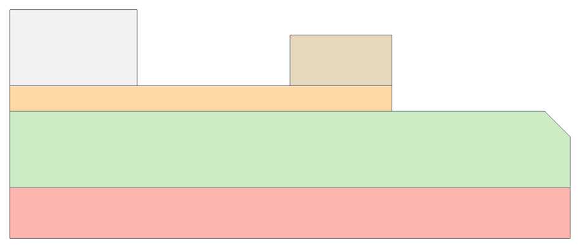
2D meridian mesh section · SJ3D mesh · SJNominal VTU · Doubled VTU
Opus 5.5
geometry pass
1 seed parts · 3584 nominal hexes
Min SJ 0.6946 / doubled 0.6996
1 full checks · 4.03 min
$0.93 · Claude CLI usage
Author-planned meridian partition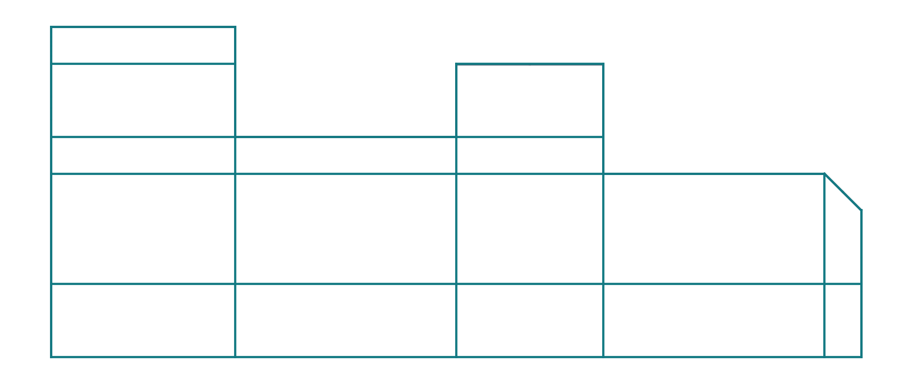
Realized source-part layout · meridian section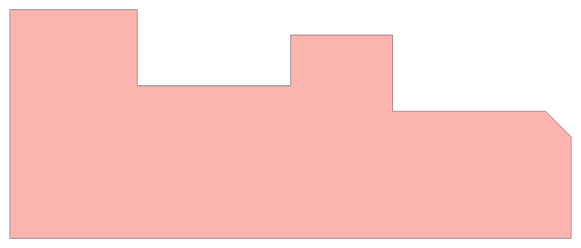
2D meridian mesh section · SJ3D mesh · SJNominal VTU · Doubled VTU
Deterministic revolved mesher
geometry pass
5 seed parts · 6180 nominal hexes
Min SJ 0.6855 / doubled 0.6860
1 full checks · 0.043 s
No API spend
Realized source-part layout · meridian section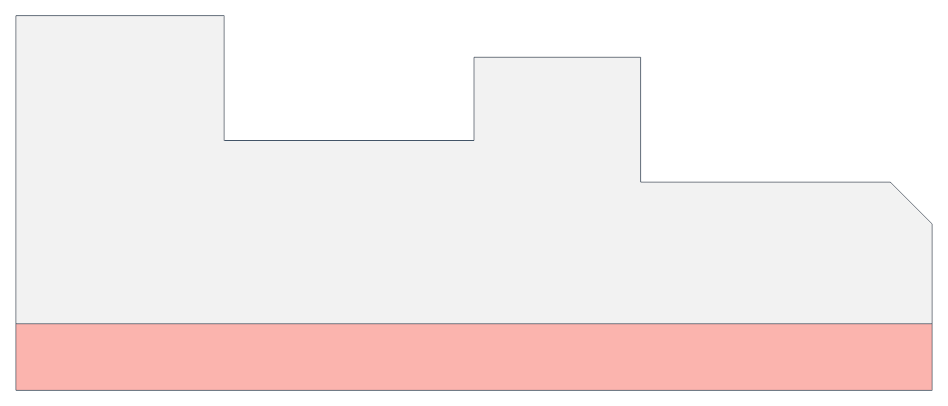
2D meridian mesh section · SJ3D mesh · SJNominal VTU · Doubled VTU
Filleted tapered body with rounded ends
revshow_fillet_domed_pin
Original CAD · half-meridian profile (axial →, radial ↑)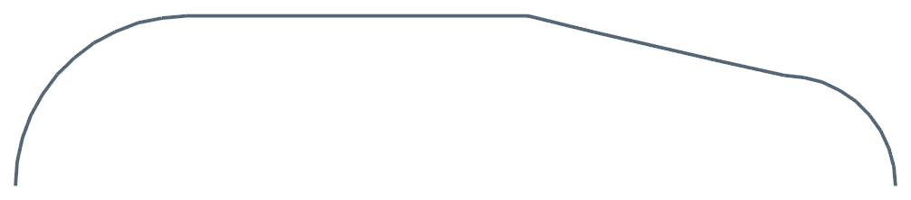
Original CAD · isometric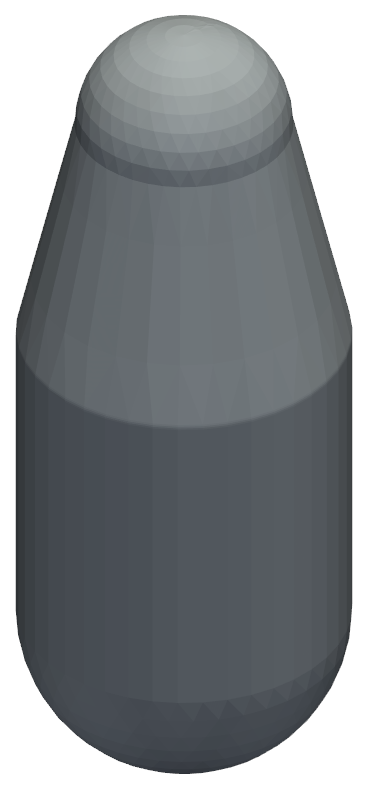
GPT 6 Astra
geometry pass
27 seed parts · 1824 nominal hexes
Min SJ 0.5774 / doubled 0.5774
1 full checks · 2.22 min
$0.93 · Standard API equivalent
Author-planned meridian partition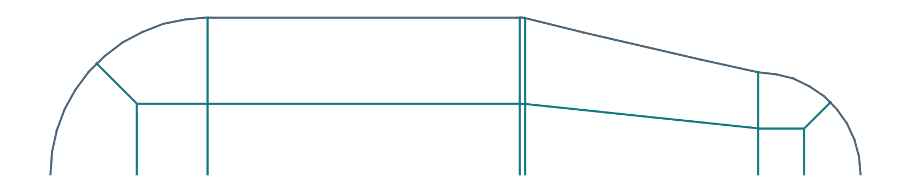
Realized source-part layout · meridian section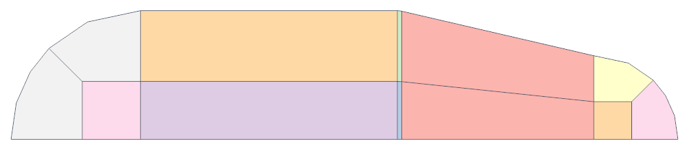
2D meridian mesh section · SJ3D mesh · SJNominal VTU · Doubled VTU
Opus 5.5
geometry pass
1 seed parts · 1740 nominal hexes
Min SJ 0.6428 / doubled 0.6428
1 full checks · 6.55 min
$1.34 · Claude CLI usage
Author-planned meridian partition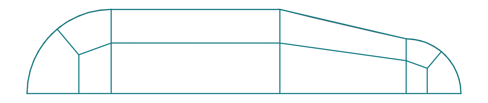
Realized source-part layout · meridian section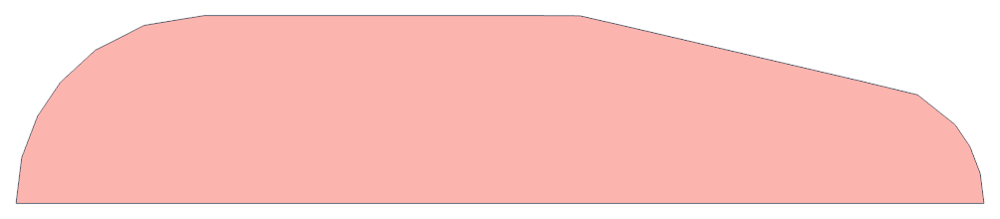
2D meridian mesh section · SJ3D mesh · SJNominal VTU · Doubled VTU
Both densities pass native checks, but the tiny torus fillet face has zero attributed boundary quads. Neighboring cells span it. Astra attributes 48/192 quads to the fillet. Capture is 0/0 eligible sharp edges for both authors.
Deterministic revolved mesher
refused
0 mesh checks · no mesh/SJ available
0.002 s compiler time
No layout or mesh emitted.
pole-revolve also declined: pole-revolve: shallow-junction-13.1deg (two-surface ring inheritance converges at rate cos^2 of the junction angle under a 50-iteration cap, so at 13.1° it does not converge; a tangent or shallow junction needs every ring node pinned, which this construction has no mechanism for)]
Hollow flanged sleeve with stepped bore
revshow_hollow_flanged_sleeve
Original CAD · half-meridian profile (axial →, radial ↑)Original CAD · isometric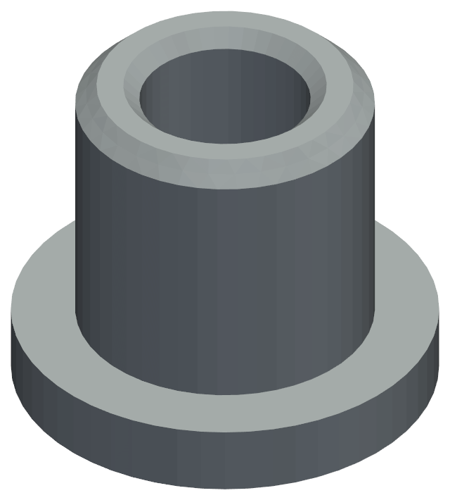
GPT 6 Astra
geometry pass
40 seed parts · 2400 nominal hexes
Min SJ 0.5987 / doubled 0.5997
1 full checks · 1.75 min
$1.04 · Standard API equivalent
Author-planned meridian partition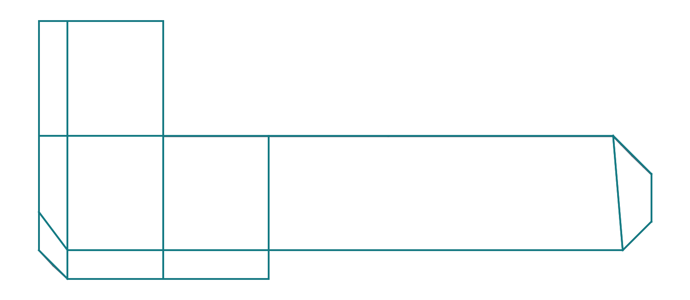
Realized source-part layout · meridian section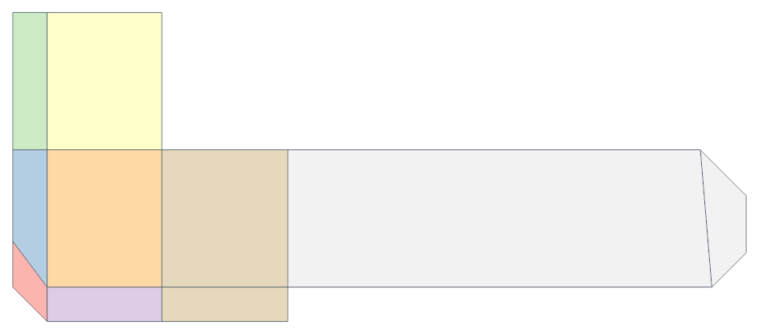
2D meridian mesh section · SJ3D mesh · SJNominal VTU · Doubled VTU
Opus 5.5
geometry pass
1 seed parts · 1216 nominal hexes
Min SJ 0.6428 / doubled 0.6452
1 full checks · 4.54 min
$1.13 · Claude CLI usage
Author-planned meridian partition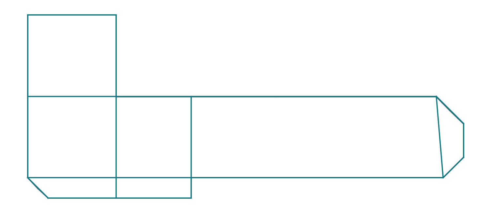
Realized source-part layout · meridian section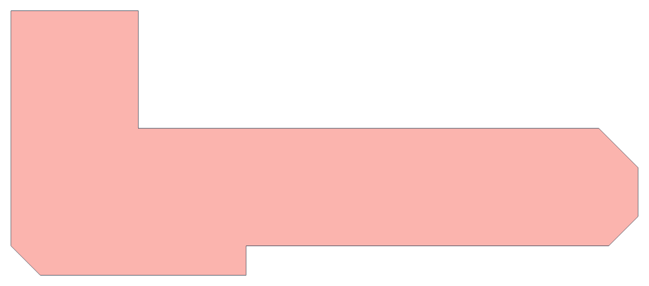
2D meridian mesh section · SJ3D mesh · SJNominal VTU · Doubled VTU
Deterministic revolved mesher
refinement failure
4 seed parts · 3528 nominal hexes
Min SJ 0.7011 / doubled unavailable
1 full checks · 0.021 s
No API spend
Realized source-part layout · meridian section2D meridian mesh section · SJ3D mesh · SJNominal VTU · Doubled mesh unavailable: native run failed
Doubled native evaluation failed: error: Inverted { part: PartId(0), count: 588, detail: "part 'q_e1p': 588 inverted element(s);
Hollow collar with rounded shoulder
revshow_hollow_rounded_collar
Original CAD · half-meridian profile (axial →, radial ↑)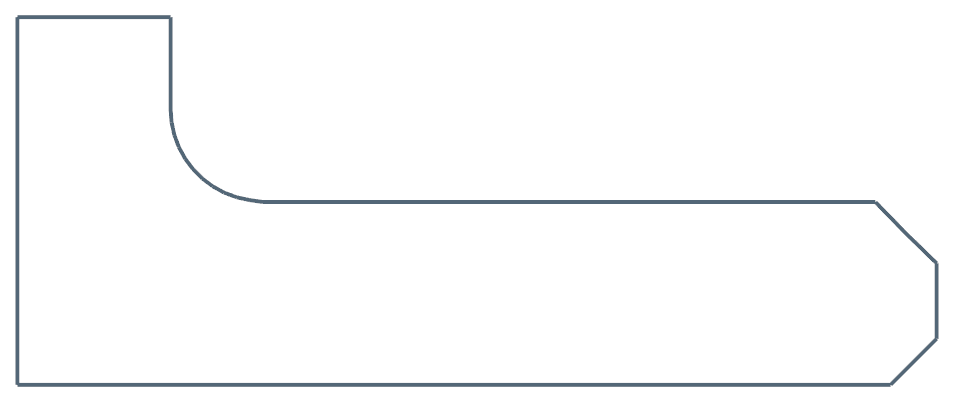
Original CAD · isometric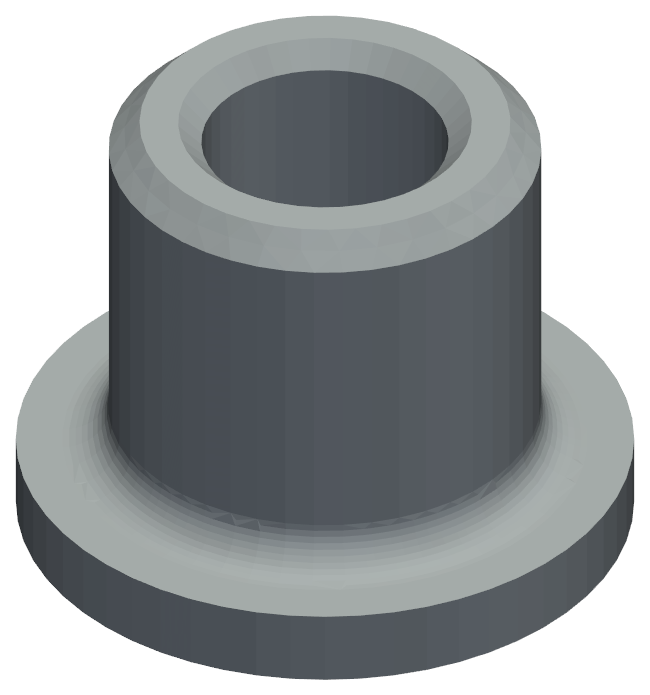
GPT 6 Astra
geometry pass
72 seed parts · 2880 nominal hexes
Min SJ 0.5761 / doubled 0.5126
1 full checks · 2.60 min
$1.07 · Standard API equivalent
Author-planned meridian partition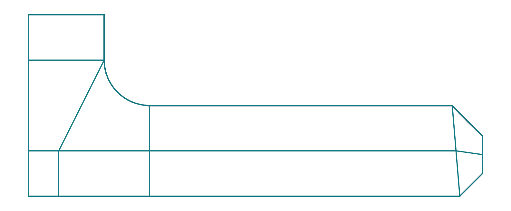
Realized source-part layout · meridian section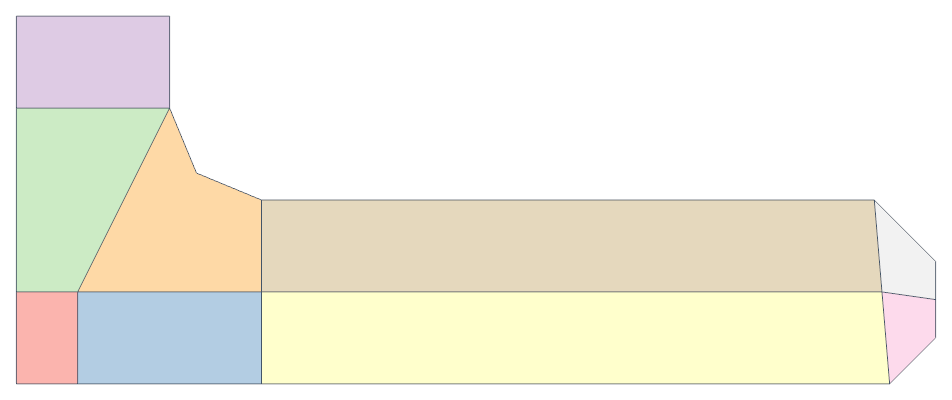
2D meridian mesh section · SJ3D mesh · SJNominal VTU · Doubled VTU
Opus 5.5
geometry pass
1 seed parts · 1728 nominal hexes
Min SJ 0.6446 / doubled 0.6456
1 full checks · 5.04 min
$1.21 · Claude CLI usage
Author-planned meridian partition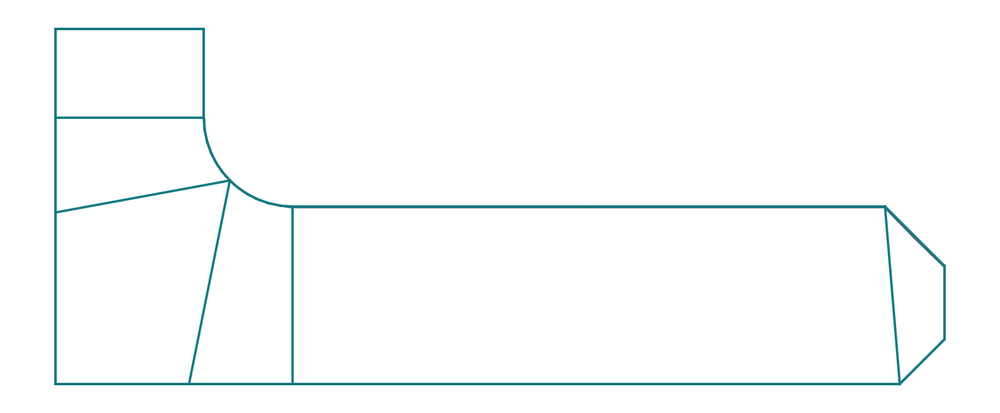
Realized source-part layout · meridian section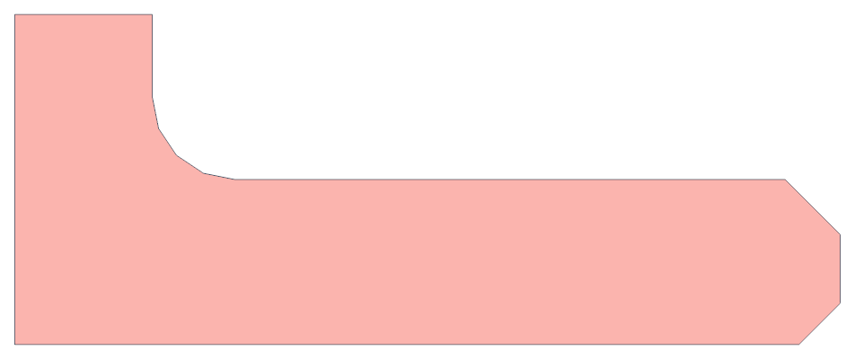
2D meridian mesh section · SJ3D mesh · SJNominal VTU · Doubled VTU
Deterministic revolved mesher
refinement failure
4 seed parts · 3936 nominal hexes
Min SJ 0.2566 / doubled unavailable
1 full checks · 0.020 s
No API spend
Realized source-part layout · meridian section2D meridian mesh section · SJ3D mesh · SJNominal VTU · Doubled mesh unavailable: native run failed
Doubled native evaluation failed: error: Inverted { part: PartId(0), count: 648, detail: "part 'q_e1p': 648 inverted element(s);